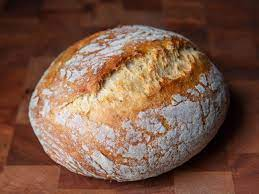

Sourdough Bread

Homemade Sourdough - Advanced Version
Making Sourdough bread at home is much easier than it looks once you get it down. This is not one of those recipes. Long story short, you guys asked for my advanced version, so here it is. It's all about Technique.
Ingredients
- 35g mature sourdough starter
- 35g whole wheat flour
- 35g all-purpose flour
- 70g room temperature water
- 804g good bread flour
- 75g whole wheat flour
- 740g water at 90°F (32°C), divided
- 18g fine sea salt
Steps
- Whisk flour, cocoa powder, sea salt and espresso powder and set aside.
- In medium large bowl add sugar, melted unsalted butter, room temperature egg one at a time, and 1 tbsp (10 g) vanilla extract.
- Mix in flour mixture with the wet ingredients until nice, smooth and glossy.
- Fold in dark chocolate.
- Add mixture to greased parchment lined 8x8 baking pan
- Bake at 350 degrees F, 175 C 35-40 minutes or until toothpick inserted comes out clean. Let cool to room temp before cutting.
- Use a metal pan over glass when baking to make cutting friendlier.
- Top with flakey salt.